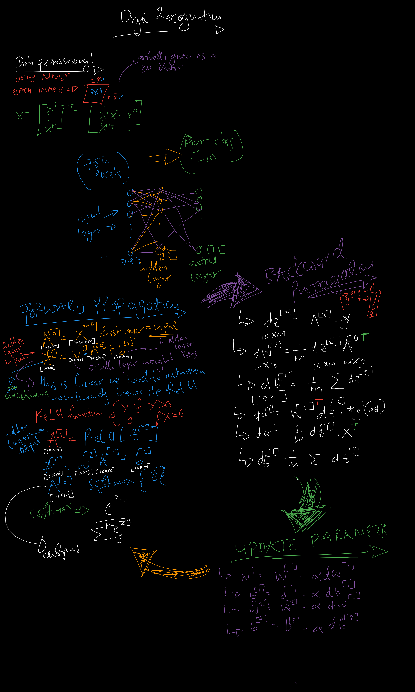

March 1, 2025 | Projects & Tutorials | Home
In the previous post in the AI series, I provided a general introduction to artificial intelligence. Now, I want to delve deeper into the subject, and what better way to learn than by getting hands-on!
This week, we'll explore the basics of neural networks through practical experience. We'll dissect the machine learning cycle, understand how each component functions, and unravel the mathematics that power these intelligent systems.
In machine learning, a neuron serves as the fundamental building block of neural networks, inspired by the neurons in the human brain. Mathematically, a neuron performs two main operations:
Putting it together:
Specifically:
A k = g(w ⋅ Z + b)
Where:
w represents the weights,Z is the input vector,b is the bias term,g is the activation function.
The linear component (w ⋅ Z + b) aggregates the input signals, while the activation function g introduces non-linearity, enabling the network to learn complex patterns.
Sigmoid Function:
g(z) = 1/1 + e-z
Use Case: Binary classification.
Pros: Smooth gradient, outputs between 0 and 1.
Cons: Can cause vanishing gradients.
ReLU (Rectified Linear Unit):
g(z) = max(0, z)
Use Case: Hidden layers in deep networks.
Pros: Computationally efficient, mitigates vanishing gradient.
Cons: Can suffer from "dying ReLUs" where neurons stop activating.
Softmax Function:
g(z_i) = ez_i/∑j ez_j
Use Case: Multi-class classification in output layer.
Pros: Outputs probabilities that sum to 1.
Machine learning libraries like TensorFlow and PyTorch have made building complex models incredibly accessible. But have you ever wondered what happens under the hood? In this project, we're going back to basics by building a handwritten digit recognizer from scratch using only NumPy and the MNIST dataset. No high-level ML libraries allowed! The project is built in google collab.
Instead of using pre-built deep learning frameworks, we'll implement a simple but effective neural network to recognize handwritten digits. Our approach will involve:
Before we dive into the code, let's outline the steps we'll take to build our digit recognizer,Here's a high-level overview of the architecture we'll be building:
First, let's set up our development environment. We'll need to install a few packages:
import numpy as np
import matplotlib.pyplot as plt
from tensorflow.keras.datasets import mnist
# Just for MNIST (AND one hot) but
# That's all from tensorflow promise....
# Load dataset from MNIST
(X_train, y_train), (X_test, y_test) = mnist.load_data()
# Print dataset shape, the data is going to be 3D
print("Training data shape:", X_train.shape, "Labels: ", y_train.shape)
print("Testing data shape:", X_test.shape, "Labels: ", y_test.shape)
# Training data shape: (60000, 28, 28)
# Testing data shape: (10000, 28, 28)
# we need to make sure the data is "easy" to process,
# I won't even try to show how the 3D data looks because it is messy.
# But... I can Display some images from the data to show how the data looks
# Get a feel of how this is all going to work
fig, axes = plt.subplots(2, 5, figsize=(10, 5))
for i, ax in enumerate(axes.flat):
ax.imshow(X_train[i], cmap='gray')
ax.set_title(f"Label: {y_train[i]}")
ax.axis('off')
plt.show()
The next step in preparing the dataset is normalizing the pixel values. The MNIST dataset contains grayscale images with pixel values ranging from 0 to 255. To improve the efficiency of our model, we scale these values to a range of [0, 1] by dividing by 255. This normalization helps with faster training and improves performance by keeping numerical values small.
Next, we reshape each image from a 28x28 matrix into a 1D vector of size 784. Since neural networks work with flat input vectors, this step converts each image into a format that can be processed efficiently.
After reshaping, we print the new shape of the dataset, which should be (60000, 784) for training and (10000, 784) for testing. This confirms that each image is now a single row in our dataset.
# Normalize pixel values to be between 0 and 1
X_train = X_train / 255.0
X_test = X_test / 255.0
# Reshape the data to 1D vectors
X_train = X_train.reshape(X_train.shape[0], -1)
X_test = X_test.reshape(X_test.shape[0], -1)
# Print the new shape
print("Training data shape:", X_train.shape)
print("Testing data shape:", X_test.shape)
# Training data shape: (60000, 784)
# Testing data shape: (10000, 784)
Forward propagation is the first phase in the operation of a neural network, where input data flows through the network layer by layer to generate an output prediction. In forward propagation, data moves in one direction only - from the input layer, through the hidden layers, and finally to the output layer. At each layer, the network performs two key operations:
1. Weighted sum calculation
2. Activation function application
For a neural network with L layers (including input layer):
Input Layer (layer 0):
a[0] = X (the input data)
For each layer l (1 to L):
z[l] = W[l] · a[l-1] + b[l]
a[l] = g[l](z[l])
Where:
Let's implement the forward propagation algorithm for a simple neural network with one hidden layer, for the first iteration however we need "seed" parameters to start the learning process
# Define network structure
input_size = 784 # 28x28 pixels
hidden_size = 128 # Hidden layer with 128 neurons
output_size = 10 # 10 output classes (digits 0-9)
alpha = 0.01 # Learning rate
# Initialize weights and biases
np.random.seed(42) # For reproducibility
W1 = np.random.randn(input_size, hidden_size) * alpha # Input → Hidden
b1 = np.zeros((1, hidden_size))
W2 = np.random.randn(hidden_size, output_size) * alpha # Hidden → Output
b2 = np.zeros((1, output_size))
Next a batch of training data is passed through the forward propagation algorithm, and the first batch of predictions is obtained
# Activation functions
def relu(Z):
return np.maximum(0, Z) # ReLU function
def softmax(Z):
expZ = np.exp(Z - np.max(Z, axis=1, keepdims=True)) # Stability trick
return expZ / np.sum(expZ, axis=1, keepdims=True)
# Forward propagation
def forward_propagation(X):
Z1 = np.dot(X, W1) + b1
A1 = relu(Z1)
Z2 = np.dot(A1, W2) + b2
A2 = softmax(Z2)
return A1, A2
After forward propagation computes the predicted outputs, backpropagation calculates the gradients of the cost function with respect to the weights and biases. These gradients are then used to update the parameters and improve the network's performance.
First, we need a cost function to measure the error of our predictions. A common choice for binary classification is the binary cross-entropy:
J = -1/m ∑i=1m [y(i) log(a[L](i)) + (1-y(i)) log(1-a[L](i))]
Where:
For a neural network with L layers, backpropagation works from the output layer back to the first hidden layer:
Output Layer (layer L):
dZ[L] = A[L] - Y
dW[L] = (1/m) · dZ[L] · (A[L-1])T
db[L] = (1/m) · ∑i dZ[L]
Hidden Layers (layer l, for l = L-1, L-2, ..., 1):
dZ[l] = (W[l+1])T · dZ[l+1] ⊙ g[l]'(Z[l])
dW[l] = (1/m) · dZ[l] · (A[l-1])T
db[l] = (1/m) · ∑i dZ[l]
Where:
Sigmoid: g'(z) = g(z) · (1 - g(z))
Tanh: g'(z) = 1 - (tanh(z))2
ReLU: g'(z) = 1 if z > 0, 0 otherwise
Leaky ReLU: g'(z) = 1 if z > 0, α otherwise
After computing the gradients, we update the parameters using gradient descent:
W[l] = W[l] - α · dW[l]
b[l] = b[l] - α · db[l]
Where α is the learning rate.
For a neural network with one hidden layer (ReLU activation) and an output layer (sigmoid activation):
Output Layer (layer 2):
dZ[2] = A[2] - Y
dW[2] = (1/m) · dZ[2] · (A[1])T
db[2] = (1/m) · ∑i dZ[2]
Hidden Layer (layer 1):
dZ[1] = (W[2])T · dZ[2] ⊙ (Z[1] > 0)
dW[1] = (1/m) · dZ[1] · XT
db[1] = (1/m) · ∑i dZ[1]
Note: (Z[1] > 0) is the derivative of the ReLU function, which equals 1 where Z[1] > 0 and 0 elsewhere.
For m training examples, the vectorized implementation is:
Output Layer:
dZ[2] = A[2] - Y
dW[2] = (1/m) · dZ[2] · (A[1])T
db[2] = (1/m) · ∑axis=1 dZ[2]
Hidden Layer:
dZ[1] = (W[2])T · dZ[2] ⊙ (Z[1] > 0)
dW[1] = (1/m) · dZ[1] · XT
db[1] = (1/m) · ∑axis=1 dZ[1]
Backpropagation can be understood as applying the chain rule of calculus repeatedly along the computational graph of the neural network:
∂J/∂W[l] = ∂J/∂Z[l] · ∂Z[l]/∂W[l]
∂J/∂b[l] = ∂J/∂Z[l] · ∂Z[l]/∂b[l]
Where ∂J/∂Z[l] is propagated backward from layer to layer using the chain rule.
# Loss function (categorical cross-entropy)
def compute_loss(y_true, y_pred):
m = y_true.shape[0] # Number of samples
loss = -np.sum(y_true * np.log(y_pred + 1e-8)) / m
# Add small value for numerical stability
return loss
# Backpropagation
def backpropagation(X, Y, A1, A2, learning_rate=0.01):
global W1, b1, W2, b2 # Use global variables for updates
m = X.shape[0]
# Compute gradients
dZ2 = A2 - Y
dW2 = (1 / m) * np.dot(A1.T, dZ2)
db2 = (1 / m) * np.sum(dZ2, axis=0, keepdims=True)
dZ1 = np.dot(dZ2, W2.T) * (A1 > 0) # ReLU derivative
dW1 = (1 / m) * np.dot(X.T, dZ1)
db1 = (1 / m) * np.sum(dZ1, axis=0, keepdims=True)
# Update weights and biases
W1 -= learning_rate * dW1
b1 -= learning_rate * db1
W2 -= learning_rate * dW2
b2 -= learning_rate * db2
Now, let's train our model using a batch gradient descent ,using 1000 epochs. This might take a few minutes:
epochs = 1000
for epoch in range(epochs):
A1, A2 = forward_propagation(X_train)
loss = compute_loss(y_train, A2)
backpropagation(X_train, y_train,A1, A2)
if epoch % 100 == 0:
print(f"Epoch {epoch}, Loss: {loss:.4f}")
Let's evaluate our model on the test set:
# Predict on test data
_, y_pred_probs = forward_propagation(X_test) # Get A2 (predicted probabilities)
y_pred = np.argmax(y_pred_probs, axis=1) # Get predicted labels
y_true = np.argmax(y_test, axis=1) # Convert one-hot encoding back to labels
# Compute accuracy
accuracy = np.mean(y_pred == y_true) * 100
print(f"Test Accuracy: {accuracy:.2f}%")
Test Accuracy: 79.17%
Which is Terrible... but it's ours! Random predictions will only be 10% accurate
Here are a few ways we can improve our model:
import numpy as np
import tensorflow as tf
from tensorflow import keras
from tensorflow.keras.layers import Dense, Flatten
from tensorflow.keras.models import Sequential
from tensorflow.keras.datasets import mnist
# Load MNIST dataset
(X_train, y_train), (X_test, y_test) = mnist.load_data()
# Normalize data
X_train, X_test = X_train / 255.0, X_test / 255.0
# Convert labels to categorical (one-hot encoding)
y_train = keras.utils.to_categorical(y_train, 10)
y_test = keras.utils.to_categorical(y_test, 10)
# Define a simple neural network
model = Sequential([
Flatten(input_shape=(28, 28)), # Flatten 28x28 images to 1D vector
Dense(128, activation='relu'),
Dense(10, activation='softmax')
])
# Compile the model
model.compile(optimizer='adam', loss='categorical_crossentropy', metrics=['accuracy'])
# Train the model
model.fit(X_train, y_train, epochs=10, batch_size=32, validation_data=(X_test, y_test))
Test Accuracy: 97.65%
Which is brilliant, and the training was 20 times faster!
As I reached the end of this blog—the longest and most time-intensive piece I've ever written—I realized that its complexity might make it too challenging to enjoy for some, while others might find it too basic to be engaging. This binary outcome largely depends on the reader’s familiarity with Neural Networks.
Summa summarum, neural networks take a "black box" approach to problem-solving, allowing the model to develop its own understanding of the data. Unlike traditional algorithms, where relationships between inputs and outputs are explicitly defined, neural networks learn these relationships on their own, making it difficult for the programmer to pinpoint exactly why the model succeeds.
The choice of parameters, number of neurons, or network architecture is largely intuitive and depends on the complexity of the problem. While there are guidelines, much of the design process involves experimentation and fine-tuning. Most importantly, neural networks thrive on data—the more, the better. Without a large dataset, even the most well-structured model would struggle to generalize and perform effectively.
Fanny Fushayi 2025